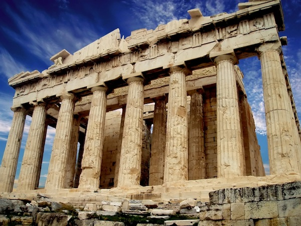

Things to see in Athens
Athens offers visitors a unique combination of old and new, located on the spectacular Mediterranean coast. The archaeological centre of Athens offers a pedestrian-only path that encircles Europe’s largest Archaeological Park for a close-up view of some of the world’s most significant ancient treasures. Details about visiting Athens can be found in the Greek National Tourism Organization official website, as well as in the City of Athens official visitors’ website.
Famous tourist sites in Athens, most of which are only minutes away from central subway stations, include:
-
Acropolis
 -
Ancient Agora

photo by Mykola Swarnyk
CC BY 3.0 -
Theatre of Dionysus and Herodus Atticus

photo by WestportWiki
CC BY-SA 3.0 -
Thissio

photo by Nikos D
CC BY-SA 3.0
-
Monastiraki

photo by Barcex
CC BY SA 2.5 -
Kerameikos

photo by Shadowgate
CC BY 2.0 -
Syntagma Square

photo by Tango7174
CC BY-SA 3.0 -
Archaeological Museum

photo by Dimboukas
-
Lycabettus hill

photo by Barcex
CC BY-SA-2.5 -
Temple of Olympian Zeus

photo by Ank@
CC BY 2.0 -
National Gardens
 photo by Argos'Dad
photo by Argos'Dad
A long list of activities and places to visit in Athens and the local vicinity is provided by visitgreece.gr, the official Greek Tourism Organisation travel guide site.
Also, many clean and beautiful beaches are within easy access of the city center via tram or bus!
Outside Athens
Delphi

With evocative ruins surrounded by breathtaking mountain scenery, Delphi is among the most beautiful ancient sites in Greece. For the ancient Greeks, Delphi was considered the center of the world, as the site was marked by the sacred Omphalos, or "navel stone." Believed to be blessed by Apollo, Delphi was the holiest site in the world for the ancient Greeks. The ruins of Ancient Delphi range in date from Mycenean times to the early Christian era. The site can be visited as a day trip, as it is a scenic 2.5 hours drive or bus ride northwest from Athens.
Olympia

In the western Peloponnese, in the "Valley of Gods", lies the most celebrated sanctuary of ancient Greece, and the birthplace of the most important athletic mega-event of all times; the Olympic Games. The site includes the remnants of an old stadium and sprint track, as well as the ruins of the once great Temple of Zeus. The Temple of Zeus once housed the great Statue of Zeus, which was one of the Seven Wonders of the Ancient World. It is less than 4 hours away from Athens and only 1 hour from Patras port, or Kalamata airport. There are numerous daily buses and trains that connect Athens to Olympia.
Argosaronic Islands

Salamina, Aegina, the peninsula of Methana, Agkistri, Poros, Spetses, Hydra form the island complex of the Argosaronic Gulf in southern Greece. Sprinkled over the Argosaronic Gulf and steeped in ancient mythology, these islands are small havens in close proximity to Athens. Daily ferry connection from the port of Piraeus makes them a lovely, easily accessible all-year-round destination for the Athenians. Visitors here will enjoy natural beauty, historical treasures, unique architecture, and glamorous, yet romantic atmosphere.
Sounion

Cape Sounion is located 69 kilometres (43 miles) southeast of Athens, at the southernmost tip of the Attica peninsula. It is noted as the site of ruins of the ancient Greek temple of Poseidon, the god of the sea in classical mythology. The remains are perched on the headland, surrounded on three sides by the sea. The site is a popular day-excursion for tourists from Athens, with sunset over the Aegean Sea, as viewed from the ruins.
This part of the guide is taken from VisitGreece and provided as a helpful resource to this site's visitors.
The copyright remains with the respective author(s).